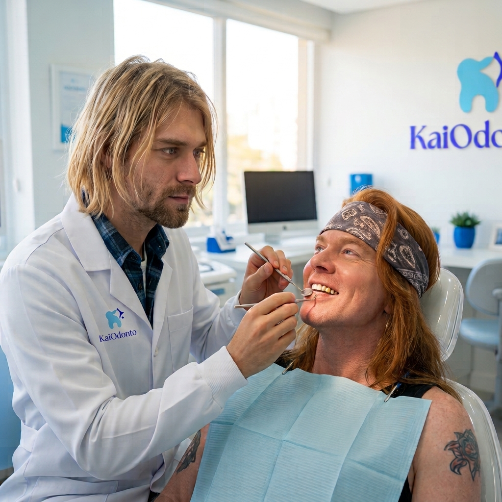

Clínica Geral
A clínica geral é a base de todo tratamento na KaiOdonto. Avaliamos sua boca por inteiro, tratamos o que for necessário e montamos um plano de cuidados para os próximos meses.
O que fazemos
- Check-up e avaliação completa
- Limpeza e remoção de tártaro
- Restaurações e tratamento de cáries
- Cuidado com a sensibilidade dentária
- Orientação de higiene e prevenção
Indicado para
- Quem não faz check-up há mais de seis meses
- Quem sente dor ou sensibilidade ao comer
- Quem quer prevenir problemas antes que apareçam
Como é o atendimento
A consulta começa com uma conversa sobre o seu histórico e as suas queixas. Depois fazemos o exame clínico e, se for preciso, pedimos radiografias. Você sai com o plano de cuidados explicado e o retorno já combinado.